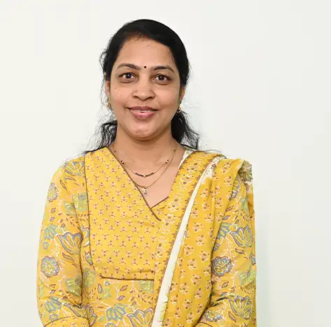

Prof. Netra Manoj Lokhande
Associate Professor

Associate Professor
Dr. Netra Lokhande is an Associate Professor in the School of School of Engineering and Technology at MIT World Peace University, Pune. She holds a PhD in Electronics, a Master's degree in Electrical Engineering, and a Bachelor's degree in Electrical and Electronics Engineering. With 25 years of experience in teaching, Dr. Lokhande has expertise in Image Processing, Power Systems, Robotics, and Power Electronics. She has published 30 research papers and is a member of various professional bodies such as ISTE, IEI, IAENG, and IAEME.
Image Processing, Power Systems, IoT, Robotics
Profiles